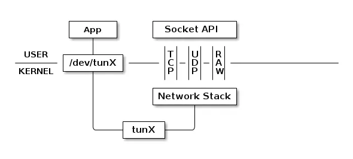
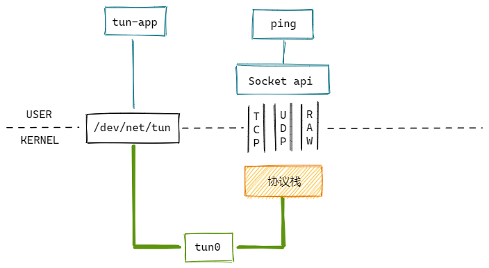

TUN/TAP
TUN/TAP为用户空间程序提供数据包的接收和传输。
tun设备的工作模式：

tun设备通过一个设备文件收发数据包。用户态的进程可以写这个文件，通过tun设备转换成一个数据包传送给内核网络协议栈。当内核发送一个包给tun设备时，用户态的进程通过读取这个文件可以拿到包的内容。
tun和tap设备工作原理完全相同，区别在于：
tun表示虚拟的是点对点设备，收发的是IP包，只能工作在L3，无法与物理网卡做桥接。tap表示虚拟的是以太网设备，收发的是链路层数据包，可以与物理网卡桥接。
实验

使用ping命令向tun设备发送ICMP request包，然后我们实现一个tun-app程序，响应ICMP reply包。
#include <fcntl.h>
#include <string.h>
#include <stdio.h>
#include <stdlib.h>
#include <unistd.h>
#include <net/if.h>
#include <sys/ioctl.h>
#include <sys/stat.h>
#include <sys/types.h>
#include <linux/if.h>
#include <linux/if_tun.h>
int main(void)
{
struct ifreq ifr;
int fd, err, nread, nwrite;
char buf[1500];
if((fd = open("/dev/net/tun", O_RDWR)) < 0)
return fd;
memset(&ifr, 0, sizeof(ifr));
ifr.ifr_flags = IFF_TUN | IFF_NO_PI;
if((err = ioctl(fd, TUNSETIFF, (void *) &ifr)) < 0) {
perror("ioctl error");
close(fd);
return err;
}
printf("Tun device name: %s\n", ifr.ifr_name);
while(1) {
nread = read(fd, buf, sizeof(buf));
if (nread < 0) {
perror("read error");
close(fd);
exit(1);
}
printf("Read %d bytes from tun device\n", nread);
// 将源IP和目的IP置换
unsigned char ip[4];
memcpy(ip, &buf[12], 4);
memcpy(&buf[12], &buf[16], 4);
memcpy(&buf[16], ip, 4);
// ICMP类型：request改为reply
buf[20] = 0;
// 校验和
*((unsigned short*)&buf[22]) += 8;
nwrite = write(fd, buf, nread);
printf("Write %d bytes to tun device\n", nwrite);
}
return 0;
}
下面开始测试：
# 编译程序
[root@vm ~] gcc tun-app.c -o tun-app
# 运行程序
[root@vm ~] ./tun-app
Tun device name: tun0
# 启用tun0
ip link set tun0 up
# 添加路由
route add 1.2.3.4 dev tun0
# 执行ping
[root@vm ~] ping 1.2.3.4
PING 1.2.3.4 (1.2.3.4) 56(84) bytes of data.
64 bytes from 1.2.3.4: icmp_seq=1 ttl=64 time=0.145 ms
64 bytes from 1.2.3.4: icmp_seq=2 ttl=64 time=0.081 ms
源码分析
内核里面tun源码在drivers/net/tun.c，tap源码在drivers/net/tap.c。下面看下tun设备的实现。
模块初始化
static const struct file_operations tun_fops = {
// 异步I/O回调
.read_iter = tun_chr_read_iter,
.write_iter = tun_chr_write_iter,
// 命令操作回调
.unlocked_ioctl = tun_chr_ioctl,
// 打开设备文件回调
.open = tun_chr_open,
...
};
static struct miscdevice tun_miscdev = {
.minor = TUN_MINOR,
.name = "tun",
.nodename = "net/tun",
.fops = &tun_fops,
};
// 模块初始化
static int __init tun_init(void)
{
// 注册杂项字符设备
ret = misc_register(&tun_miscdev);
...
}
打开设备
首先调用open打开设备文件，回调tun_chr_open：
static int tun_chr_open(struct inode *inode, struct file * file)
{
struct tun_file *tfile;
tfile = (struct tun_file *)sk_alloc(net, AF_UNSPEC, GFP_KERNEL,
&tun_proto, 0);
// 初始化ring
if (ptr_ring_init(&tfile->tx_ring, 0, GFP_KERNEL)) {
sk_free(&tfile->sk);
return -ENOMEM;
}
RCU_INIT_POINTER(tfile->tun, NULL);
// 设置sock操作回调
tfile->socket.file = file;
tfile->socket.ops = &tun_socket_ops;
}
访问tun设备有两种方式：文件方式、socket方式。
上面的实现使用的是文件方式。
然后使用ioctl打开设备，回调__tun_chr_ioctl，函数命令功能很多，我们这里只看下TUNSETIFF命令。
static long __tun_chr_ioctl(struct file *file, unsigned int cmd,
unsigned long arg, int ifreq_len)
{
...
if (cmd == TUNSETIFF) {
...
ret = tun_set_iff(net, file, &ifr);
}
}
static int tun_set_iff(struct net *net, struct file *file, struct ifreq *ifr)
{
// 根据ifr_name获取网络设备
dev = __dev_get_by_name(net, ifr->ifr_name);
if (dev) {
tun = netdev_priv(dev);
...
} else {
// 找不到则创建
dev = alloc_netdev_mqs(sizeof(struct tun_struct), name,
NET_NAME_UNKNOWN, tun_setup, queues,
queues);
tun = netdev_priv(dev);
// 初始化tun设备
tun_net_init(dev);
rcu_assign_pointer(tfile->tun, tun);
...
}
}
static void tun_net_init(struct net_device *dev)
{
...
dev->netdev_ops = &tun_netdev_ops;
dev->header_ops = &ip_tunnel_header_ops;
/* Point-to-Point TUN Device */
dev->hard_header_len = 0;
dev->addr_len = 0;
dev->mtu = 1500;
/* Zero header length */
dev->type = ARPHRD_NONE;
dev->flags = IFF_POINTOPOINT | IFF_NOARP | IFF_MULTICAST;
...
}
static const struct net_device_ops tun_netdev_ops = {
// 设置tun设备发包回调
.ndo_start_xmit = tun_net_xmit,
...
};
上面的主要做了申请资源，创建tun设备并初始化。
用户空间从tun设备读取
static ssize_t tun_chr_read_iter(struct kiocb *iocb, struct iov_iter *to)
{
ret = tun_do_read(tun, tfile, to, noblock, NULL);
}
static ssize_t tun_do_read(struct tun_struct *tun, struct tun_file *tfile,
struct iov_iter *to,
int noblock, void *ptr)
{
// 从ring里面获取帧
ptr = tun_ring_recv(tfile, noblock, &err);
struct sk_buff *skb = ptr;
// 把包写到用户空间
ret = tun_put_user(tun, tfile, skb, to);
...
}
用户空间向tun设备写入
static ssize_t tun_chr_write_iter(struct kiocb *iocb, struct iov_iter *from)
{
...
// 从用户空间获取数据包
result = tun_get_user(tun, tfile, NULL, from, noblock, false);
...
}
static ssize_t tun_get_user(struct tun_struct *tun, struct tun_file *tfile,
void *msg_control, struct iov_iter *from,
int noblock, bool more)
{
// 申请skb
skb = tun_alloc_skb(tfile, align, copylen, linear, noblock);
// 将数据拷贝到skb中
err = skb_copy_datagram_from_iter(skb, 0, from, len);
// skb一些设置
skb_reset_mac_header(skb);
skb->protocol = pi.proto;
skb->dev = tun->dev;
skb_reset_network_header(skb);
skb_probe_transport_header(skb);
skb_record_rx_queue(skb, tfile->queue_index);
// 发送skb
netif_rx_ni(skb);
}
tun设备发包
static netdev_tx_t tun_net_xmit(struct sk_buff *skb, struct net_device *dev)
{
...
// 将数据包放入ring队列中
if (ptr_ring_produce(&tfile->tx_ring, skb))
goto drop;
// 唤醒读进程去处理数据包
if (tfile->flags & TUN_FASYNC)
kill_fasync(&tfile->fasync, SIGIO, POLL_IN);
tfile->socket.sk->sk_data_ready(tfile->socket.sk);
...
}
流程总结：
协议栈如何把包传递给应用程序：
- 协议栈回调ndo_start_xmit函数指针，调用到tun_net_xmit；
- tun_net_xmit 将数据包放入 ring 队列，并唤醒进程去处理数据包；
- 应用程序调用 read/recvmsg系统调用， 会陷入到内核函数 tun_do_read；
- tun_do_read 从 ring 队列中取出数据包，把数据包拷贝到用户空间。
应用程序如何把包传递给协议栈：
- 应用程序调用 write/sendmsg 系统调用，会陷入到内核函数 tun_get_user；
- tun_get_user 从用户空间拷贝数据包到内核空间，并调用 netif_rx_ni 接收处理数据包；
- netif_rx_ni 的流程不再赘述。